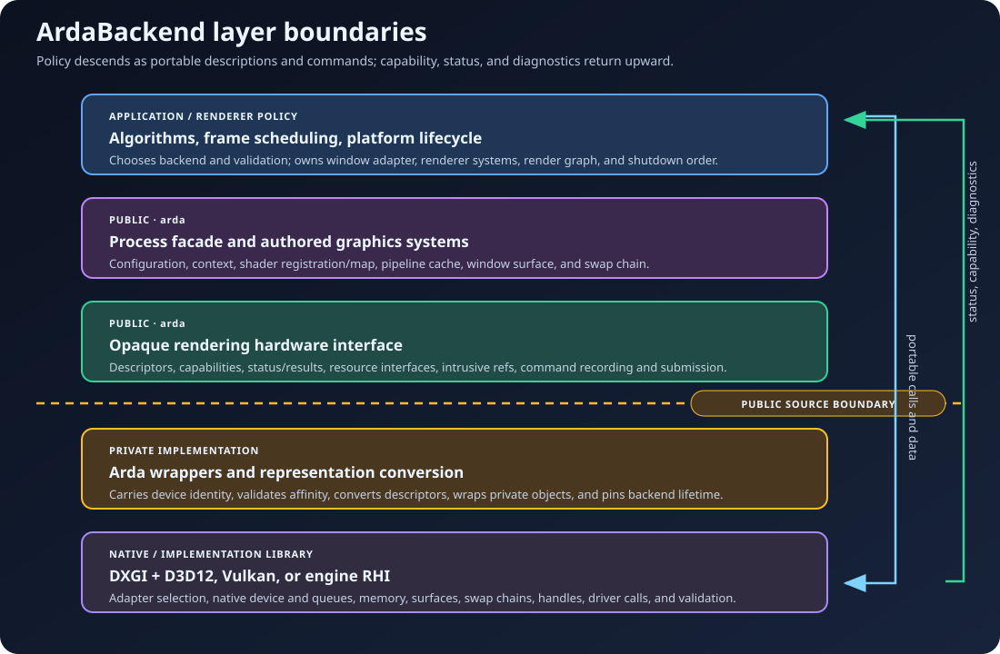

Cross-platform production graphics
ArdaBackend
ArdaBackend is the stable boundary between renderer intent and a linked graphics implementation. It turns portable descriptions of GPU work into validated resources, pipelines, command lists, queue submissions, shader services, and presentation. The implementation may be the checked-in native D3D12/Vulkan modules or a host engine RHI.
Learning objectives
After this chapter, you should be able to:
- explain why a renderer needs a graphics backend in addition to a native API;
- place ArdaBackend between application policy, rendering algorithms, platform code, and GPU drivers;
- distinguish a backend, an RHI, a render graph, and a renderer;
- trace one frame from resource descriptions to command execution and presentation;
- identify the process-wide, device-affine, and GPU-timeline invariants that production code must preserve; and
- choose an efficient path through the remaining chapters.
Prerequisites
This guide assumes working knowledge of C++ object lifetime and basic raster rendering. Review the glossary entries for device, queue, descriptor, shader, pipeline state object, and swap chain if those terms are unfamiliar.
For a first integration, read this chapter and then Getting started. For an engine-level or alternate-RHI integration, follow with Architecture and Backend modules before writing resource or threading code.
What a cross-platform graphics backend is
A renderer expresses a picture as algorithms and data: visibility results, material parameters, lights, geometry, post-processing passes, and output targets. A GPU API accepts a different vocabulary: memory-backed objects, descriptor bindings, immutable pipelines, command buffers, queues, barriers, and synchronization primitives. A graphics backend is the translation and governance layer between those vocabularies.
Three jobs of a backend
- Normalize representation. A portable texture description becomes the appropriate native image or resource description. A portable state transition becomes the backend-specific barrier sequence.
- Preserve semantics. “Sample this texture after a copy” must remain correct even though D3D12 and Vulkan represent states, ownership, and synchronization differently.
- Contain variability. Adapter discovery, validation setup, native handles, queue families, swap-chain construction, and API-specific errors stay below a stable project boundary.
The abstraction is not valuable merely because two APIs have different function names. Its real value is that the rest of the engine can rely on one model for ownership, error handling, device affinity, command ordering, and diagnostics.
What ArdaBackend does
- Discovers linked backend modules, selects one by stable name or compatibility class, and publishes an opaque
FArdaDeviceContext. - Exposes backend-neutral resource descriptions, object interfaces, capability queries, status values, and intrusive references.
- Enumerates registered shader permutations, delegates compiler configuration or execution to the selected module with a DXC-compatible fallback, persists keyed artifacts, and constructs binding layouts from C++ parameter metadata.
- Creates immutable pipeline state, reuses live objects in a bounded cache, and persists backend-native D3D12/Vulkan cache data across runs.
- Records explicit graphics, compute, and copy work and submits it to available queues.
- Bridges platform windows to a backend-owned presentation path without leaking window-system types into the RHI.
- Routes native validation and backend diagnostics into project-level reporting.
The public layer is deliberately not tied to a native API. The checked-in native-vulkan and native-d3d12 libraries implement the same provider contract available to host-engine RHIs. See Backend modules for the implementation boundary and build wiring.
What ArdaBackend does not do
- It does not decide which objects are visible, which lighting model to use, or how to schedule game systems. Those are renderer and engine responsibilities.
- It does not infer a complete frame graph from commands. ArdaRenderGraph provides logical pass scheduling and transient-resource planning above this layer.
- It does not embed a shader compiler library or require per-shader CMake commands. The shader system can launch a configured external DXC process at startup or first use, or remain bytecode-only.
- It does not erase hardware differences. Callers must query capabilities and queue availability instead of assuming every backend exposes every feature.
- It does not make arbitrary concurrent access safe. Thread-safety is a contract of each subsystem, not a side effect of abstraction.
System boundaries
A useful boundary answers two questions: “Who is allowed to make this decision?” and “Who owns the resulting object?” ArdaBackend keeps those answers explicit.

- Application and engine
- Choose startup policy, own the window adapter, install diagnostics, coordinate threads, and define shutdown order.
- Renderer and render graph
- Choose algorithms, frame resources, pass dependencies, shader permutations, and pipeline descriptions.
- ArdaBackend authored systems
- Resolve shader registrations, build binding layouts, cache pipelines, and provide presentation integration.
- Opaque Arda RHI
- Define portable object interfaces and executable GPU operations while preserving device identity and structured status.
- Private backend implementation
- Select native adapters and queues, translate descriptions, wrap implementation objects, and enforce native lifetime requirements.
- Driver and operating system
- Schedule work on hardware, manage display integration, and report device- or API-level failures.
Worked example: one frame through the system
Consider a windowed renderer that draws an opaque mesh and presents it.
- Startup. The application configures validation, shader mode, writable shader/pipeline cache paths, and the selected API; it then supplies an
IArdaWindowSurfaceand initializes a device plus swap chain. - Acquire. The swap chain provides a backend-neutral framebuffer. The renderer does not receive an
ID3D12Resource*orVkImage. - Describe. The renderer chooses registered vertex and pixel shaders, fixed-function state, vertex format, and framebuffer formats. These values form a portable pipeline description.
- Resolve. The pipeline cache validates and normalizes the description, then returns an intrusive pipeline reference. A cache hit avoids native pipeline creation.
- Bind. Shader parameter metadata turns C++ fields into binding-set descriptions that retain the required RHI resources.
- Record. A command list is opened, resource states are established, pipeline and bindings are set, and a draw is recorded.
- Submit. Closing a command list makes it executable; submitting it establishes ordered work on a particular queue. Recording alone does not execute anything.
- Present. The swap chain coordinates the native acquire/render/present synchronization and displays the completed image.
The same renderer-facing sequence works on D3D12 and Vulkan because ArdaBackend standardizes the contract, not because the underlying APIs perform identical operations.
Reading roadmap
The chapters are organized from lifetime foundations toward increasingly specialized work.
1. Getting started
Choose a backend, understand adapters/devices/queues, initialize headless or presentation mode, configure validation, and tear down safely.
2. Architecture
Study opaque interfaces, ownership, backend pinning, process state, device affinity, statuses, concurrency domains, and native interop.
3. Backend modules
Implement and link a provider, declare module capabilities, select exact implementations, and integrate shader services.
4. External interop
Adopt a host-owned native or engine-RHI device, coordinate supplied queues, import named resources, and preserve native lifetime.
5. RHI resources
Learn descriptors, validation, resource creation, capabilities, views, native imports, and retained references.
6. Shaders
Register virtual source paths and permutations, choose startup or first-use compilation, understand keyed artifacts and authored metadata, and initialize the device-bound global shader map.
7. Pipeline states
Derive immutable PSOs, complete framebuffer-dependent formats, distinguish live LRU from native disk persistence, and diagnose creation failures.
8. Commands
Record state transitions, draws, dispatches, and copies; submit queues; establish cross-queue ordering; and manage completion.
9. Presentation
Bridge native windows, acquire framebuffers, resize safely, submit presentation work, and recover from surface failures.
10. Diagnostics
Combine validation messages, status values, logs, cache diagnostics, assertions, and reproducible failure reports.
Goal-directed paths
- Compute or offline tool: Getting started → RHI resources → Commands → Diagnostics.
- Windowed renderer: Getting started → Architecture → Shaders → Pipelines → Commands → Presentation.
- Engine-owned device and presentation: Getting started → Architecture → External interop → RHI resources → Commands → Diagnostics.
- Preparing for render-graph integration: read Architecture → RHI resources → Commands. This site currently teaches the Backend boundary that a render graph would target; dedicated RenderGraph coverage is a future documentation module.
- Production incident: Diagnostics → the failing subsystem → Architecture failure containment.
Production invariants
These rules are more important than memorizing individual method names:
- One published backend context per process. Configure and initialize under application-level lifecycle sequencing.
- No partial publication. Shader registration, native device creation, and optional swap-chain creation must all succeed before the live context becomes visible.
- Device affinity is transitive. Resources, views, framebuffers, pipelines, caches, and command lists combined in an operation must originate from the same device.
- CPU lifetime and GPU lifetime differ. Releasing the last CPU reference is safe only after submitted GPU work no longer needs the object.
- Capabilities precede optional operations. Backend selection alone proves neither feature support nor the presence of distinct compute/copy queues.
- Submission creates execution order. Command-list recording order is not cross-queue synchronization.
- Failures are data. Preserve status codes, messages, selected backend, validation output, and relevant descriptors.
Design tradeoffs and alternatives
Direct native API calls
Direct D3D12 or Vulkan code offers maximum control and immediate access to new extensions. It also duplicates lifecycle, memory, synchronization, diagnostics, and presentation logic across APIs. ArdaBackend accepts a translation cost to centralize those contracts.
A third-party RHI exposed directly
Exposing an implementation library can reduce wrapper code. It makes that library's types part of the engine-wide source and ABI contract. ArdaBackend adds an opaque project boundary so the private implementation can change without rewriting renderer-facing code.
A single “universal” feature set
A strict lowest-common-denominator API simplifies portability but strands capable hardware. Capability-driven interfaces retain one programming model while allowing guarded use of richer features.
One global renderer object
A monolithic object can make startup look simple, but it conflates process state, authored rendering policy, GPU object ownership, presentation, and frame scheduling. ArdaBackend keeps a narrow process facade and returns references to explicit RHI objects.
Failure analysis by boundary
- Before device creation
- Configuration is unsupported, shader paths collide, registration is invalid, or the requested backend is unavailable. Correct inputs and retry; no live context should have been published.
- During native initialization
- Adapter requirements, native feature levels, validation setup, queue discovery, or device creation failed. Capture
GetBackendError()and diagnostic callback output. - During object creation
- A descriptor is invalid, unsupported, or belongs to the wrong device. Inspect the complete
FArdaRHIStatus, not only its Boolean conversion. - During recording or submission
- The command list is in the wrong state, queue capability is absent, a resource state is incorrect, or cross-queue ordering is missing.
- During presentation
- The window dimensions are invalid, surface creation failed, the swap chain is out of date, or display/device state changed. Consult the presentation lifecycle.
Chapter summary
- A graphics backend converts renderer intent into native GPU objects and ordered work while governing ownership, diagnostics, and portability.
- ArdaBackend owns backend startup, an opaque RHI, authored shader/pipeline systems, command submission, and presentation integration.
- Rendering policy and frame scheduling remain above the backend; native API and driver details remain below it.
- Production correctness depends on process lifecycle, device affinity, GPU-aware lifetime, capability checks, and explicit synchronization.
Review and checkpoint questions
- Why is replacing native type names insufficient to create a useful cross-platform backend?
- Which decisions belong to a renderer, and which belong to ArdaBackend?
- Why can a copied resource reference remain alive after the process-wide backend slot is cleared?
- What evidence should accompany a backend-specific failure report?
- Where should a render graph sit relative to the RHI, and why?